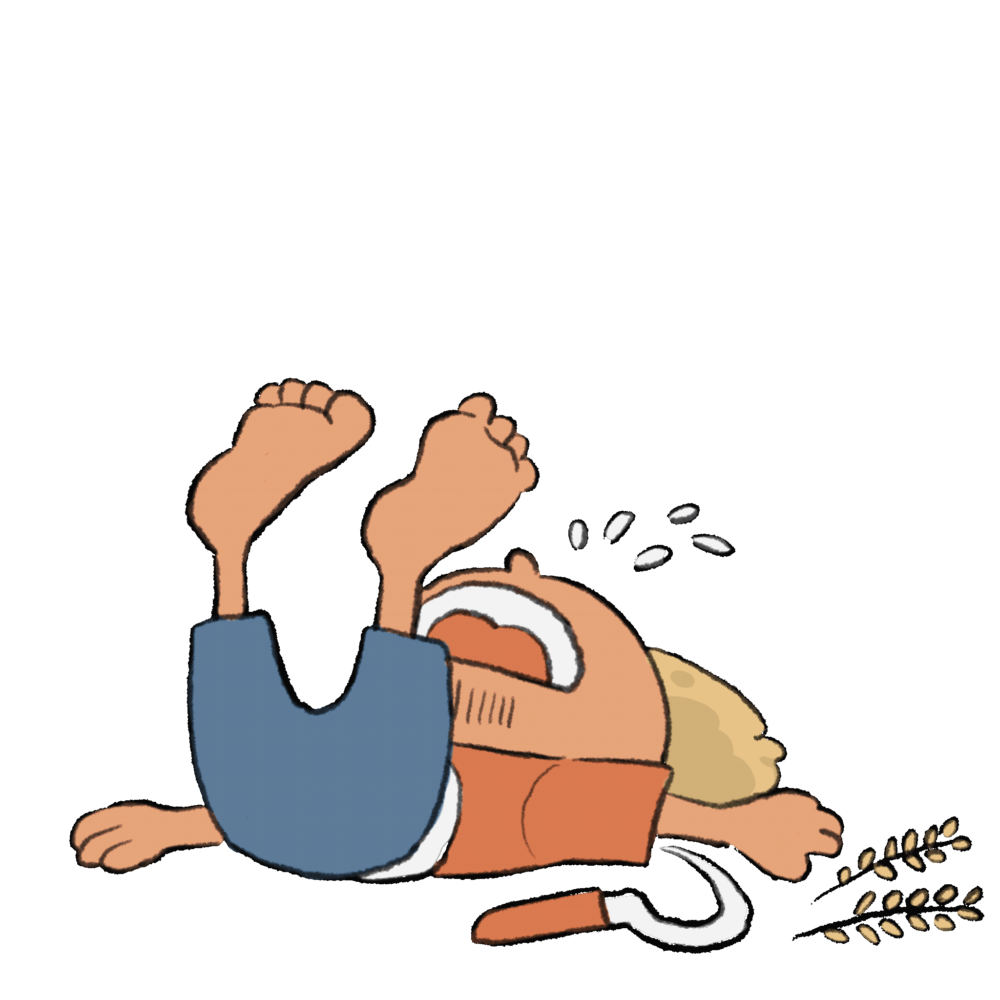

เกษตรกรไทย
เกษตรกรไทย
มีจำนวนมากถึง 14% จากประชากรทั้งหมด นับเป็นอาชีพที่สร้างรายได้
หลักให้แก่ประเทศ จนได้ชื่อว่าเป็น “ กระดูกสันหลังของชาติ ”



ทำไม
ถึงเป็นเช่นนั้น
ตามไปดูปัญหา
ที่เกษตรกรชาวไทยต้องเผชิญกันดีกว่า